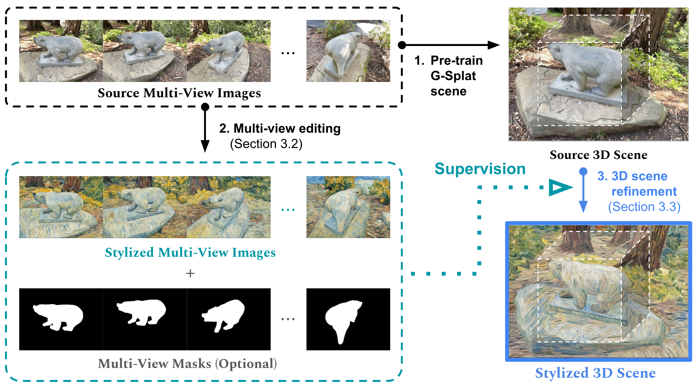

3D Scene Stylization Pipeline
Our method consists of two main stages: (1) a training stage, where we train a 3D scene representation using stylized multi-view images, and (2) an inference stage, where we generate stylized multi-view images from the trained 3D scene representation. The training stage involves re-training the initial 3D scene representation with stylized multi-view images, ensuring both style consistency and view consistency. The inference stage utilizes the trained model to generate stylized images from novel viewpoints.

Multi-Region Stylization
Our method can apply 3D style transfer to different semantic regions based on segmentation masks, enabling spatially controlled stylization. In the example below, we apply three different styles to distinct regions while keeping the background area unchanged, demonstrating the ability to selectively transfer style while preserving certain parts of the original scene.

Results
We evaluate our method on various scenes and styles, demonstrating its effectiveness in generating high-quality stylized images with view consistency.